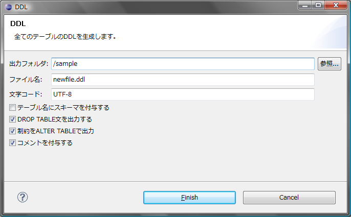
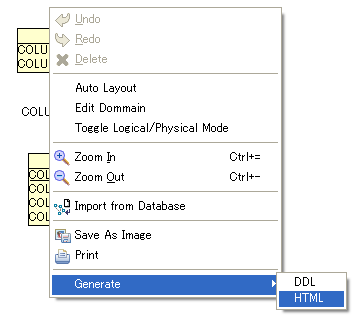

エクスポート
ダイアグラムからデータベースを構築するためのDDLを生成します。
DDLにはDROP文を含めるかどうか、制約をALTER TABLE文として出力するかなどを指定することができます。
- ダイアグラムエディタで右クリック > [エクスポート] > [DDL]を選択します。
- 出力先のディレクトリ、ファイル名、出力オプションを選択してDDLを出力します。

ダイアグラム上で右クリック > [選択されたテーブルのDDLを表示]を選択することで、
ダイアログでDDLを確認することもできます。
ダイアグラムからJavadoc風のHTMLを生成します。
- ダイアグラムエディタで右クリック > [エクスポート] > [HTML]を選択します。

- HTMLを出力するディレクトリを選択します。
ダイアグラムから画像ファイルを生成します。
- ダイアグラムエディタで右クリック > [エクスポート] > [イメージ]を選択します。
- 画像ファイルのファイル名を入力します。AmaterasERDは以下の形式の画像ファイルの生成をサポートしています:
- *.png
- *.jpg, *.jpeg
- *.bmp
なお、ダイアグラム上で右クリック > [画像としてコピー]を選択することでクリップボードに画像としてコピーすることもできます。
ダイアグラムからテーブル定義書（Excel）を生成します。
- ダイアグラムエディタで右クリック > [エクスポート] > [Excel]を選択します。
- DDLを出力するディレクトリを選択し、DDLファイルのファイル名を入力します。